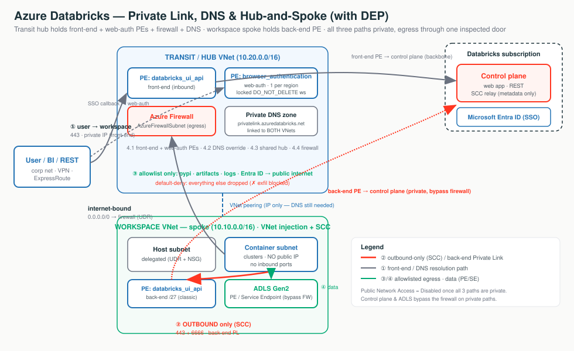

Stage 2 gave you a workspace with three doors — ① users in, ② clusters to the control plane, ③ clusters to storage — already on the Microsoft backbone but reachable at a public phone number. This stage installs private extensions (4.1), edits the directory (DNS) so callers land on them (4.2), builds one guarded lobby reused fleet-wide (4.3), and puts a customs officer on the single exit (4.4).
A building retrofit. Private Link swaps the public hop on each path for a private IP; DNS decides whether anyone lands on it; hub-and-spoke decides where the endpoints physically live; and DEP forces the residual internet egress through one inspected, default-deny chokepoint. Flip Public Network Access = Disabled once all three paths are private.
| Subtopic | What it does | Path(s) it hardens | Sharpest edge |
|---|---|---|---|
| 4.1 Connection types | Three private extensions: front-end / back-end / web-auth | ① & ② | Web-auth = 1 per region (delete it → region-wide login outage) |
| 4.2 Private DNS | CNAME→A override so the public name resolves to the private IP | ① & ② | #1 cause of "it doesn't work"; forget pl-auth → SSO fails |
| 4.3 Hub-and-spoke | Build private ingress/DNS/egress once in a transit VNet, peer spokes | ① ② ③ | Peering ≠ DNS; Standard vs Simplified = blast radius vs cost |
| 4.4 Exfiltration protection | UDR forces egress through one Azure Firewall FQDN allowlist | egress side | Routing SCC through the firewall (self-inflicted outage) |

"Every Databricks path — user-in, cluster-out, and the SSO callback — sits on a private IP inside your VNet, so we set Public Network Access = Disabled and nothing touches the internet. The control plane and your storage bypass the firewall on private paths, so we pay to inspect a trickle of genuine internet egress, not your data."
databricks_ui_api and browser_authentication. → 4.1privatelink.azuredatabricks.net — resolves the workspace URL to the PE's private IP. → 4.20.0.0.0/0 → firewall forces egress through the chokepoint. → Stage 3 / 4.4Three private extensions, one per direction. Switch the diagram between front-end, back-end, and web-auth — the highlighted arrow is the active path; click any box for the "what + why."
Only two groupIds exist: databricks_ui_api (used by both
front-end and back-end — the VNet you place it in makes it one or the other) and
browser_authentication (SSO only). And Private Link does not replace SCC — it removes
the last public hop SCC left behind.
| Back-end (classic) | Front-end (inbound) | Web-auth | |
|---|---|---|---|
| Secures | Cluster → control plane (SCC relay + REST) | User/BI/REST → workspace | SSO/OAuth login callback |
groupId | databricks_ui_api | databricks_ui_api | browser_authentication |
| Lives in | Workspace VNet | Transit VNet | Transit VNet (web-auth ws) |
| How many | 1 per workspace VNet | 1 per transit VNet | 1 per region / DNS zone |
| Required NSG Rules | NoAzureDatabricksRules | AllRules (hybrid) | NoAzureDatabricksRules |
Terraform (azurerm). Full apply-ready module deferred; only DEP (4.4) ships a standalone main.tf.
resource "azurerm_private_endpoint" "backend" { # BACK-END: in the WORKSPACE VNet
subnet_id = var.workspace_pe_subnet_id # dedicated /27
private_service_connection {
private_connection_resource_id = var.workspace_id
subresource_names = ["databricks_ui_api"] # SAME groupId as front-end; location decides the role
is_manual_connection = false
}
private_dns_zone_group { private_dns_zone_ids = [azurerm_private_dns_zone.adb.id] }
}
# FRONT-END: same groupId, placed in the TRANSIT VNet.
# WEB-AUTH: subresource_names = ["browser_authentication"] on the LOCKED web-auth workspace (1 per region).
# Flags: back-end/full = public_network_access_enabled=false + NSG "NoAzureDatabricksRules";
# front-end hybrid = public_network_access_enabled=true + NSG "AllRules".Portal: workspace → Settings → Networking → Private endpoint connections → + Private endpoint → Target sub-resource → transit (front-end/web-auth) or workspace (back-end) VNet → Integrate with private DNS zone = Yes.
Forget web-auth → REST works but browser login spins/fails region-wide (the #1 Private Link outage). Wrong NSG mode → connectivity drops. Delete the web-auth host workspace → every workspace in the region loses browser login.
Private Link gives you the private IP; DNS is the switch that decides whether anyone lands on it. Switch the diagram between the workspace name and the SSO name to see the CNAME→A override chain; click any box for the "what + why."
The public zone hands out a CNAME to ….privatelink.azuredatabricks.net; your
private zone holds the A record to the private IP. nslookup from
inside the VNet proves it: the public name is an alias, the Address is the PE's private
IP. The zone name is fixed: privatelink.azuredatabricks.net.
| Aspect | Azure-integrated Private DNS | Custom DNS (own server) |
|---|---|---|
| Who writes records | Azure auto-creates on PE creation | You (forwarding or manual A records) |
SSO (pl-auth) name | Handled automatically | Must add explicitly — easy to forget |
| Shared PE, multi-workspace | Azure maps many names → right IPs | Single-entry risk — clean to do 1 ws / PE |
| When to use | Greenfield Azure-DNS | Enterprises with central/on-prem DNS |
resource "azurerm_private_dns_zone" "adb" {
name = "privatelink.azuredatabricks.net" # FIXED zone name — do not change
resource_group_name = "dns-rg"
}
resource "azurerm_private_dns_a_record" "workspace" { # adb-<id>.<n> -> databricks_ui_api PE IP
name = "adb-1234567890123456.7" # host LABEL only (zone supplies the suffix)
zone_name = azurerm_private_dns_zone.adb.name ; resource_group_name = "dns-rg" ; ttl = 10
records = [azurerm_private_endpoint.ui_api.private_service_connection[0].private_ip_address]
}
# webauth A record: name = "westus.pl-auth" -> browser_authentication PE IP (required for front-end SSO)
# Link the zone to EVERY VNet that must resolve privately (workspace + transit + spokes).Custom DNS: conditional-forward *.azuredatabricks.net,
*.privatelink.azuredatabricks.net, *.databricksapps.com to 168.63.129.16.
PE created but zone not linked → clients resolve the public IP →
Control Plane Request Failure. Workspace record present, pl-auth forgotten
→ login page loads, then the SSO callback fails. Full FQDN in the A-record name → no resolution
(use just the host label).
Build the private front door, DNS, and egress firewall once in a transit VNet, then peer every workspace spoke to it. Switch between the Standard and Simplified deployments; click any box for the "what + why."
VNet peering gives IP reachability only — not DNS. You still must link the
privatelink.azuredatabricks.net zone to both VNets (or conditional-forward), or clusters and
users resolve the public IP and Private Link silently does nothing.
| Dimension | Standard (separate transit VNet) | Simplified (combined PE host) |
|---|---|---|
browser_authentication PE | Dedicated locked web-auth workspace | On an existing workspace |
| Blast radius of deleting the host | Low — web-auth ws does nothing else | High — breaks SSO for all regional ws |
| Infra & cost | More (extra VNet + workspace) | Fewer resources |
| Recommended for | Production, multi-ws, regulated | Non-prod, single-ws-per-region, PoC |
resource "azurerm_virtual_network_peering" "ws_to_hub" {
virtual_network_name = azurerm_virtual_network.ws.name # spoke
remote_virtual_network_id = azurerm_virtual_network.transit.id # hub
allow_forwarded_traffic = true # let hub firewall forward spoke egress
resource_group_name = "ws-rg" ; name = "ws-to-hub"
}
# FRONT-END PE in transit VNet, BACK-END PE in workspace VNet — same groupId, location decides the role.
# Link the ONE privatelink.azuredatabricks.net zone to BOTH VNets.Subnet sizing: transit PE subnet /26–/25 · web-auth ws host+container /28 or /27 · classic back-end PE /27. Stop all compute before NSG/Private Link changes (15+ min).
Forget port 6666 on the PE-subnet NSG → front-end works, clusters fail.
Route SCC (6666) through the hub firewall → extra hop that breaks back-end connectivity.
Put browser_authentication on a deletable workspace (Simplified) in prod → one
destroy kills SSO region-wide.
Force every internet-bound packet through one inspected, default-deny chokepoint — but keep the control plane and your storage on private paths that bypass it. Switch the diagram between the four flows; click any box for the "what + why."
With back-end Private Link on, the docs say "the Azure Databricks service tag isn't required" in the UDR — the control plane/SCC drop off the firewall entirely. ADLS data uses a Private/Service Endpoint. So you pay to inspect a trickle of genuine internet egress, not your data or control-plane chatter.
| Control | Restricts | Cost | Use when |
|---|---|---|---|
| NSG egress rules | By IP/port/service tag (coarse) | Free | Cheap coarse guardrail |
| Service Endpoint Policy | Storage egress to approved accounts | Free | Stop data to unapproved ADLS |
| Azure Firewall + UDR (DEP) | All egress, FQDN/port allowlist | Hourly + per-GB | Regulated; exfil-proof pattern |
| Full Private Link (no internet) | Control + data plane fully private | PE per-GB | Maximum isolation; pair with DEP |
A focused, apply-ready main.tf ships alongside the lesson — DEP is the deliverable the network team applies.
resource "azurerm_firewall" "hub" {
sku_name = "AZFW_VNet" ; sku_tier = "Standard" # Standard = FQDN application rules
ip_configuration {
subnet_id = azurerm_subnet.fw.id # MUST be named "AzureFirewallSubnet"
public_ip_address_id = var.fw_pip # stable egress IP for downstream allowlists
name = "fw-ipconfig"
}
name = "adb-hub-fw" ; resource_group_name = "adb-hub-rg" ; location = var.region
firewall_policy_id = azurerm_firewall_policy.dep.id
}
resource "azurerm_route" "to_firewall" { # the forcing function (BOTH subnets)
address_prefix = "0.0.0.0/0" ; next_hop_type = "VirtualAppliance"
next_hop_in_ip_address = azurerm_firewall.hub.ip_configuration[0].private_ip_address
route_table_name = azurerm_route_table.spoke.name ; resource_group_name = "adb-rg" ; name = "to-firewall"
}
# With back-end Private Link on, NO AzureDatabricks service-tag route is needed.
# Allowlist (East US ex.): dbartifactsprodeastus.blob… , ucstprdeastus.dfs… , *.pypi.org , login.microsoftonline.com.
# Network rules: metastore 3306/TCP, Event Hubs 9093/TCP.Attach the 0.0.0.0/0→firewall UDR before allowlisting / Private Link → clusters
can't reach the relay/artifacts and won't launch. Route SCC through the firewall
→ latency, per-GB cost, fragile FQDN rules. Route table on only one subnet → the un-routed
subnet's egress escapes the firewall. Assume DEP covers serverless → it doesn't (that's NCC,
Stage 5).
publicNetworkAccess=Disabled0.0.0.0/0→firewall UDR before allowlisting / Private Linkbrowser_authentication on a deletable workspace in productionStart free, step up only when mandated. SCC + VNet injection + storage firewall + Service Endpoint cost nothing and are backbone-private. Add Private Link / DEP only when a regulator demands no public-IP hop or a provable internet allowlist. Use Standard hub-and-spoke for production and Simplified only for non-prod / single-workspace-per-region.
| Customer asks… | Architect answers… |
|---|---|
| "Does any Databricks traffic ever hit the public internet?" | With all 3 PL types + publicNetworkAccess=Disabled, no — only the explicit FQDN allowlist (pypi, artifacts, Entra ID) egresses, via the firewall's single public IP. |
| "Prove a compromised notebook can't POST our data out." | The firewall's implicit deny-all + the FQDN allowlist; we show the rule collection (and disable notebook download/export too). |
| "Can we keep a few trusted IPs / Power BI on the public URL during rollout?" | Yes — front-end hybrid (publicNetworkAccess=Enabled + AllRules) gated by IP access lists. |
| "Will Private Link replace SCC / VNet injection?" | No — it complements them; they're prerequisites for back-end. |
| "Give us one stable egress IP for partner allowlists." | The Azure Firewall's public IP (classic). Serverless IPs are dynamic — pivot to the service tag / NCC. |
| "Does this cover our serverless SQL warehouses?" | No — DEP is classic compute in your VNet; serverless egress is NCC + network policies (Stage 5). Set this expectation early. |
Web-auth missing or its DNS wrong.First check: does <region>.pl-auth.azuredatabricks.net resolve to the browser_authentication PE's private IP?
Control Plane Request FailureBack-end path not actually private.First check: is the zone linked to the workspace VNet, and does the URL resolve to the private IP from a cluster subnet?
Wrong NSG mode.First check: NoAzureDatabricksRules for back-end, AllRules for hybrid front-end.
Web-auth host workspace/endpoint deleted.First check: does WEB_AUTH_DO_NOT_DELETE_<region> still exist with a Delete lock?
UDR attached before allowlist/Private Link.First check: firewall deny logs for the artifact-blob / tunnel.<region> FQDN.
Route table on only one subnet.First check: is it associated with BOTH host and container subnets?